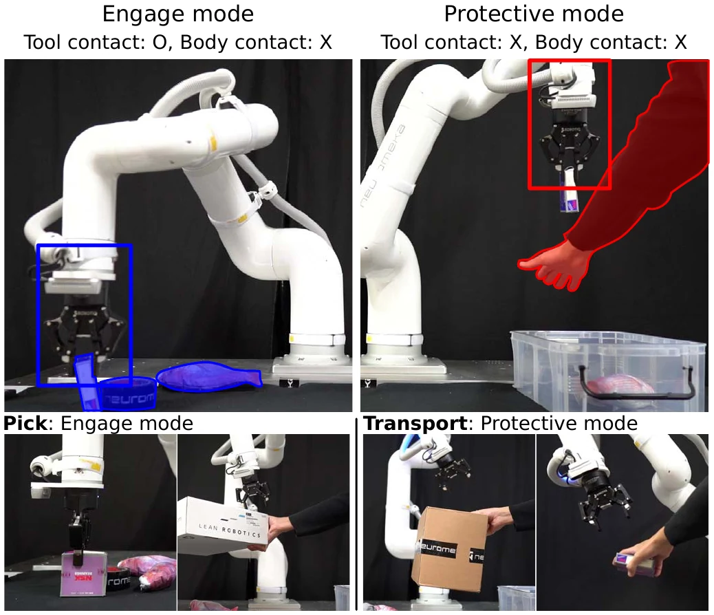

IEEE RA-L 2025 · Robot safety
Learning Fast, Tool-Aware Collision Avoidance for Collaborative Robots
Collision avoidance that adapts in real time to the tool a robot carries and to whether that tool may touch its surroundings.
- Authors
- Joonho Lee, Yunho Kim, Seokjoon Kim, Quan Nguyen, Young Jin Heo
- Venue
- IEEE Robotics and Automation Letters, 10(8), 7731–7738, 2025
Summary

Collaborative robots must avoid people and obstacles in dynamic scenes, yet many tasks require the tool to touch objects on purpose, and the tool itself changes from task to task. This work introduces a tool-aware collision-avoidance system that adjusts in real time to different tool sizes and to the mode of tool–environment interaction. A learned perception model filters the robot and its tool out of the point cloud, reasons about occluded regions, and predicts collision risk under partial observability; a control policy trained with constrained reinforcement learning then produces smooth avoidance manoeuvres in under 10 ms. An interaction-mode input sets contact permissions: engage mode lets the tool make contact during picking, while protective mode forbids all contact during transport. In simulated and real-world tests, the system outperforms traditional approaches (APF, MPPI) in dynamic environments while keeping sub-millimetre accuracy, and runs at about 60% lower computational cost than a state-of-the-art GPU-based planner.